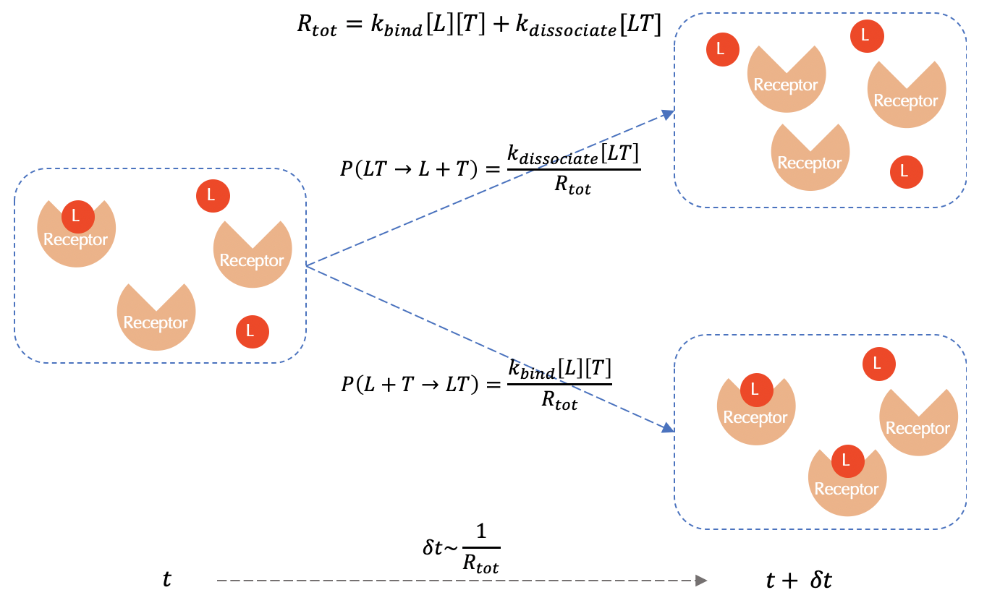
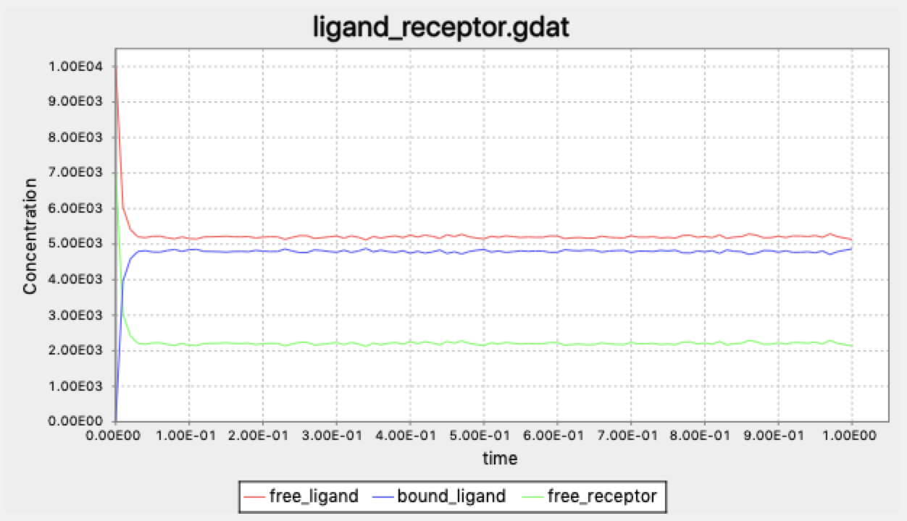

Stochastic simulation of multiple chemical reactions in a well mixed environment
Verifying a theoretical steady state concentration via stochastic simulation
In the previous module, we saw that we could avoid keeping track of the positions of individual diffusing particles in a simulation if we assume that these particles are well-mixed, i.e., uniformly distributed throughout their environment. The E. coli cell is so small that we will assume that the concentration of any particle in its immediate surroundings is uniform. Therefore, as a proof of concept, let us see if a well-mixed simulation replicates the steady state concentrations of particles that we just found.
Even though we can calculate steady state concentrations by hand, we will find a particle-free simulation useful for two reasons. First, this simulation will give us snapshots of the concentrations of particles in the system over multiple time points and allow us to see how quickly the concentrations reach equilibrium. Second, we will soon expand our model of chemotaxis to have many particles and reactions that depend on each other, and direct mathematical analysis of the system like what we have done in the previous lesson will not just be tedious; it will quickly become impossible as the number of particles and reactions grows.
The difficulty at hand is comparable to the famed “n-body problem” in physics. Predicting the motions of two celestial objects interacting due to gravity can be done exactly, but there is no known such solution once we add more bodies to the system.
Our particle-free model will apply an approach called Gillespie’s Stochastic Simulation Algorithm, which is often called the Gillespie algorithm or just SSA for short. Before we explain how this algorithm works, we take a short detour to provide some needed probabilistic context.
The Poisson and exponential distributions
Say that you own a store and have noticed that on average, there are λ customers entering your store in a single hour. Let X denote the number of customers that enter the store in the next hour; X is an example of a random variable because it may change based on random chance. If we assume that customers are independent actors and that two customers cannot arrive at the exact same time, then X follows a distribution called a Poisson distribution; it can be shown that for a Poisson distribution, the probability that exactly n customers arrive in the next hour is
\[\mathrm{Pr}(X = n) = \dfrac{\lambda^n e^{-\lambda}}{n!}\,.\]A derivation of this formula is beyond the scope of our work here, but if you are interested in one, please consider this post by Andrew Chamberlain.
Furthermore, the probability of observing exactly n customers in t hours where t is an arbitrary positive number is
\[\dfrac{(\lambda t)^n e^{-\lambda t}}{n!}\,.\]We can also ask how long we will typically have to wait for the next customer to arrive. Specifically, what are the chances that this customer will arrive after t hours? If we let T be the random variable corresponding to the wait time on the next customer, then the probability of T being at least t is the probability of seeing zero customers in t hours:
\[\mathrm{Pr}(T > t) = \mathrm{Pr}(X = 0) = \dfrac{(\lambda t)^0 e^{-\lambda t}}{0!} = e^{-\lambda t}\,.\]In other words, the probability \(\mathrm{Pr}(T > t)\) decays exponentially over time as t increases. For this reason, the random variable T is said to follow an exponential distribution. It can be shown that the mean value of the exponential distribution (i.e., the average amount of time we will need to wait for the next event to occur) is 1/λ.
STOP: What is the probability Pr(T < t)?
An overview of the Gillespie algorithm
The engine of the Gillespie algorithm runs on a single question: given a well-mixed environment of particles and a reaction involving those particles taking place at some average rate, how long should we expect to wait before this reaction occurs somewhere in the environment?
This is the same question we asked in the previous section; we have simply replaced customers entering a store with chemical reactions. Therefore, an exponential distribution can be used to model the “wait time” between individual reactions. The more reactions we have, and the faster these reactions occur, the larger the value of λ, meaning that we typically do not have to wait very long for the next reaction.
Numerical methods exist that allow us to generate a random number simulating the wait time of an exponential distribution. By repeatedly sampling from the exponential distribution, we obtain a collection of varying wait times between consecutive occurrences of the reaction.
Once a wait time is selected, we must determine the reaction to which this event corresponds. If the rates of the reactions are all equal, then this is an easy problem; we simply choose one of the reactions with equal probability. But if the rates of these reactions are different, then we should choose one of the reactions via a probability that is weighted in direct proportion to the rate of the reaction; that is, the larger the rate of the reaction, the more likely that this reaction corresponds to the current event.1
We will illustrate the Gillespie algorithm by returning to our ongoing example, in which we are modeling the forward and reverse reactions of ligand-receptor binding and dissociation, respectively. First, a wait time is chosen according to an exponential distribution with mean value 1/(kbind + kdissociate); that is, λ is equal to the sum of reaction rates kbind + kdissociate. The probability that the event corresponds to a binding reaction is given by
Pr(L + T → LT) = kbind/(kbind + kdissociate)
and the probability that the event corresponds to a dissociation reaction is
Pr(LT → L + T) = kdissociate/(kbind + kdissociate)
STOP: Verify that these two probabilities sum to 1.
The process of selecting a reaction is visualized in the figure below.
 A visualization of a single reaction event used by the Gillespie algorithm for ligand-receptor binding/dissociation. Red circles represent ligands (L), and orange wedges represent receptors (T). The wait time for the next reaction is drawn from an exponential distribution with mean 1/(kbind + kdissociate). The probability of this event corresponding to a binding or dissociation reaction is proportional to the rate of the respective reaction.
Specifying ligand-receptor binding with a single BioNetGen rule
Throughout this module, we will employ BioNetGen to build particle-free simulations of chemotaxis applying the Gillespie algorithm.
We will have two molecules corresponding to the ligand and receptor L and T that we call L(t) and T(l), respectively. The (t) specifies that molecule L contains a binding site with T, and the (l) specifies a component binding to L. We will use these components later when specifying reactions. We do not have to use t and l for this purpose, but it will make our model easier to understand.
BioNetGen reaction rules are written similarly to chemical equations. The left side of the rule includes the reactants, which are followed by a unidirectional or bidirectional arrow, indicating the direction of the reaction, and the right side of the rule includes the products. After the reaction we indicate the rate constant of reaction; if the reaction is bi-directional, then we separate the forward and backward reaction rate constants with a comma.
For example, to code up the bi-directional reaction A + B <-> C with forward rate k1 and reverse rate k2, we would write A + B <-> C k1, k2.
Our model consists of a single bidirectional reaction and will have only a single rule. The left side of this rule will be L(t) + T(l); by specifying L(t) and T(l), we indicate to BioNetGen that we are only interested in unbound ligand and receptor molecules. If we had wanted to select any ligand molecule, then we would have simply written L + T.
On the right side of the rule, we will have L(t!1).T(l!1), which indicates the formation of the intermediate. In BioNetGen, ! indicates formation of a bond; and a unique character specifies the possible location of this bond. In our case, we use the character 1, so that the bond is represented by !1. The symbol . is used to indicate that the two molecules are joined into a complex.
Since the reaction is bidirectional, we will use k_lr_bind and k_lr_dis to denote the rates of the forward and reverse reactions, respectively. (We will specify values for these parameters later.)
As a result, this reaction is shown below. We name our rule specifying the ligand-receptor reaction LR.
LR: L(t) + T(l) <-> L(t!1).T(l!1) k_lr_bind, k_lr_dis
The following tutorial shows how to implement this rule in BioNetGen and use the Gillespie algorithm to determine the equilibrium of a reversible ligand-receptor binding reaction.
Does a simulation confirm our steady state calculations?
We previously showed a worked example in which a system with 10,000 free ligand molecules and 7,000 free receptor molecules produced the following steady state concentrations using bonding rates of kbind = 0.0146((molecules/µm3)-1)s-1 and kdissociate = 35s-1.
- [LT] = 4793
- [L] = 5207
- [T] = 2207
The BioNetGen model covered in the previous tutorial uses the same number of initial molecules and the same reaction rates. The system evolves via the Gillespie algorithm, and we track the concentration of free ligand molecules, ligand molecules bound to receptor molecules, and free receptor molecules over time. Our goal is to see whether the concentrations reach a steady-state, and whether the steady-state matches our calculation.
The figure below demonstrates that the Gillespie algorithm quickly converges to the same values as the ones that we obtained by hand in the last lesson. As a result, we can see the power of using a particle-free stochastic simulator to quickly obtain a result without needing to perform any mathematical calculations.
 A concentration plot over time for ligand-receptor dynamics via a BioNetGen simulation employing the Gillespie algorithm. The concentrations reach a steady state at the end of the simulation that matches the concentrations identified by hand.
Yet this simple ligand-receptor model is just the beginning of our study of chemotaxis. In the next section, we will delve into the complex biochemical details of chemotaxis. Furthermore, we will see that the Gillespie algorithm for stochastic simulations will scale easily as our model of this system grows more complex.
-
Schwartz R. Biological Modeling and Simulaton: A Survey of Practical Models, Algorithms, and Numerical Methods. Chapter 17.2. ↩